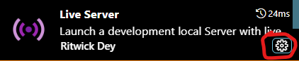
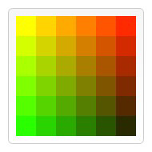
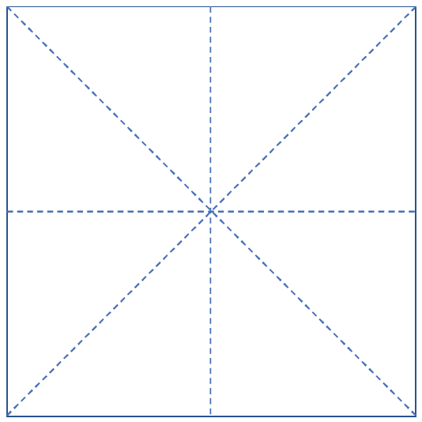

ITCS : WebGL Tutorial 1
Fall 2023
Professor: Zachary Wartell
Revision: $REVISION$ (git logs)

"ITCS : JavaScript Tutorial" by Zachary Justin Wartell is licensed under a Creative Commons Attribution-NonCommercial-ShareAlike 4.0 International License.
Compatibility
This page has been tested on Chrome Version 111.
VS Code IDE Setup
Remark: Circa 2023, modern browser security (CORS, etc.) defeats older workarounds that allowed a WebGL app to load server side data (textures, 3D models, etc.) without running a WWW server. After exploring a dozen options, my solution for in this course is to have everyone install the VSCode IDE with its Live Server extension. This will start a WWW server automatically whenever WebGL programs are run within VSCode.
- Install VSCode: Download and install VS Code on your computer The main page https://code.visualstudio.com/ has download options for all major operating systems.
- VSCode - Getting Started: Watch, do and
learn: https://code.visualstudio.com/docs/introvideos/basics
- Extension "Live Server": In the video
above you installed a VSCode extension "Live
Preview". We will use a better alternative,"Live Server by Ritwick Dey" (v5.7.9 or
newer). Install this VSCode extension now. After installing, adjust the following
settings:
- Left click the settings icon on the Live Server extension:

- In the popup menu select the menu item, Extension
Settings.
This will open up a window with a variety of settings for this extension - Find the setting, Live Server › Settings: Custom Browser, and in the drop down menu select the browser: "chrome."
- Left click the settings icon on the Live Server extension:
- Clone WGL PG Code: In your ITCS_3120
directory, clone the WebGL Programming Guide example code:
lucretius@Monad42 ~/ITCS_/
$git clone https://cci-git.charlotte.edu/UNCC_Graphics_Third_Party_Libraries/WebGL_Programming_Guide.git
- View WGL PG Examples in VS Code: In VS
Code, from the main menu use File ->
Open Folder to select the above folder, i.e. WebGL_Programming_Guide.
This will load the code files in this directory. They will
appear listed in the VS Code (left side) Explorer
panel, In the Explorer panel, right-click the
file index.html. In the
pop-up menu, select Open with Live
Server. An instance of Chrome should start in a
new window displaying the following page:

Click on the first links under ch01. These are two examples from WebGL PG Chapter 1.
.
Project and Repo Setup
- New Repo: Create a new
remote repository on the Git server called "itcs--webgl-tutorial-1".
Follow all the standard practices for the course, e.g. remote repository "Private" , Group Invite private group "Reporter" (see https://webpages.charlotte.edu/zwartell/Teaching/Git%20Tutorial/Git%20Tutorial.html#toc-basic-git-operations)
- Clone: Clone your repo into your course directory
lucretius@Monad42 ~/ITCS_/$git clone https://cci-git.uncc.edu/your_user_id/itcs--webgl-tutorial-1.git -webgl-tutorial-1we
- VS Code Project Setup: Keep one instance of VS Code open to the WebGL_Programming_Guide directory. Now you will open a second instance for your owncode. From the VS Code main menu select, File -> New Window. This will open a new window and new instance of VS Code. In the new instance select Open Folder. Open your project folder folder -webgl-tutorial-1.
- Initial
Files: In directory -webgl-tutorial-1, create the
following new files:
- readme.md
- .gitignore
- questions.* - This a document file must be a
format that can include drawings, images, etc. The
file format must be either a MS Word file, questions.docx,
or another format that you will export to PDF format when
you finish up this project.
Verify that these files appear both in the left side VSCode Explorer panel and verify in bash that they are in your -webgl-tutorial-1 directory. - Git commit all the files with message "-initial files"
WebGL PG: Chapter 1
- Chapter 1: Overview of WebGL - read this chapter. There are no associated exercises for this chapter.
WebGL PG: Chapter 2
For Chapter 2, read one section of Chapter 2 at a time. While reading each section the chapter, perform the exercises below associated with each section.
While reading, open up each example program in a browser. Use the browser’s Development Tools to examine all the HTML, JavaScript and WebGL shader code in the browser script viewer windows, while you read Chapter 2’s description of the code.<
- WebGL PG: Chapter 2. Your First Step with WebGL - read introductory paragraphs
- Chapter 2: Section
"What Is a Canvas" [page 52]
- Read this section of Chapter 2. When you reach the discussion about the code for Figure 2.2, open the DrawRectangle.html, DrawRectangle.js files in VSCode and study the code as the book walks you through it. Run the program in VSCode. To do so in the VSCode Explorer, panel right-click DrawRectangle.html and select Open with Live Server. Use the Chrome debugger tools to step through the executing DrawRectangle to solidify your understanding of the program.
- Exercise [DrawRectangle]:
In this exercise you will modify the DrawRectangle program.
- Create the directory structure as illustrated below in
bash by copying the indicated files from the
WebGL_Programming_Guide directories to your
-webgl-tutorial-1 directory:
lucretius@Monad42 ~/ITCS_/-webgl-tutorial-1/
$find .
./.gitignore
./.vscode
./readme.md
./questions.docx
./lib
./lib/cuon-matrix.js
./lib/cuon-utils.js
./lib/webgl-debug.js
./lib/webgl-utils.js
./DrawRectangle
./DrawRectangle/DrawRectangle.html
./DrawRectangle/DrawRectangle.j
- In the VSCode instance for your -webgl-tutorial-1 folder, verify that you can run DrawRectangle.html using Open with Live Server.
- Change the code to draw the rectangle at a size that is 1.5 times larger.
- Change the color of the original rectangle to any other color
- Add second rectangle of any color and size and position you choose on the canvas.
- Add a third additional object
the looks something like the following. This
object is a rectangle made of 36 other rectangles
aligned in a grid with each small rectangle having a
different color. (You choose the colors,
over size and position on of this third object).

- Git
add and commit this updated code using the commit
message:
"-completed DrawRectangle"
- Create the directory structure as illustrated below in
bash by copying the indicated files from the
WebGL_Programming_Guide directories to your
-webgl-tutorial-1 directory:
- Chapter 2: Section “The
World’s Shortest WebGL Program: Clear Drawing Area [page 63]
- Read this section of Chapter 2. When you reach the discussion about the code for Chapter 2's Figure 2.6, open the HelloCanvas.html in your WebGL_Programming_Guide VSCode instance. Study the programs code as the book walks you through it. Run the program in VSCode with the Live Server. Use the Chrome debugger tools to step through the executing code to solidify your understanding of the program.
- Exercise [HelloCanvas]:
In this exercise you will modify the HelloCanvas program.- Create the directory structure as illustrated below by
copying files from the WebGL_Programming_Guide
directory:
lucretius@Monad42 ~/ITCS_/-webgl-tutorial-1/
$find .
[..other details elided..]
./HelloCanvas
./HelloCanvas/HelloCanvas.html
./HelloCanvas/HelloCanvas.js
- Add an additional console log message when the GLContext is successfully created.
- Change the Canvas size to 800 by 800
- Modify the clear color is red.
- Git add all the updated code the message: '-adjusting size and color'
- Modify the code so that the
clear color is randomly chosen every time the page is
loaded (i.e. if the user hit browser “Reload” button, she should see a different, random color each time).
JavaScript Hint: See:
https://developer.mozilla.org/en-
US/docs/Web/JavaScript/Reference/Global_Objects/Math/random - Git add, commit with a single commit using the message: "-added random coloring"
- Create the directory structure as illustrated below by
copying files from the WebGL_Programming_Guide
directory:
- Appendix A. No Need to Swap
Buffers in WebGL [page 740]
Read this section of the WebGL PG book. Pay attention to the discussion on alert and confirm; note the wording:
"This implies that if you call methods that return control to the browser, such as alert() or confirm(), the browser may then display the contents of the color buffer to the screen."
- Questions:
- Open HelloCanvas1.html in a
browser and study the js code.
For the questions below, put your answers in your Questions file . - Question 1: Before executing it, what do you expect to see?
- Execute the code.
- Question 2: What do you see?
- Change enableAlert to true and save the file. Execute the code again.
- Question 3: What do you see?
- Question 4:
Regarding Question 3, you may see different behavior in different browsers and even different versions of the same browser (Chrome’s behavior changed between 2015 and 2016!). In some browsers’ the “may” in the earlier quote, turns out to be “does not” and in others it turns out to be “does”. Assume, that in a particular browser in the second case (ix), you do see all 4 different colors. For such as browser, answer the following question: Using you knowledge of how double buffering works (discussed in class) and using the discussion in WebGL book Appendix A, explain in writing why, in the first case (vii), you only see a black square, but in the second case (ix) you see 4 different colored squares -- even though in the first case there is a delay loop that should allow you to see the other 4 colors, each for a brief moment.
Use a diagram (neat, scanned hand sketched pictures are ok; or use your preferred drawing tool) to help explain your answer. - Git commit with message: "-answered swap buffers questions"
- Open HelloCanvas1.html in a
browser and study the js code.
- Questions:
- Chapter 2: Section “Draw a
Point (Version 1)" [page 74]
- Read this section of Chapter 2. When you reach the discussion about the code in Figure 2.9, open the HelloPoint1.html in your WebGL_Programming_Guide VSCode instance. Study the programs code as the book walks you through it. Use the Live Server and Use the Chrome debugger tools to solidify your understanding of the program.
- Exercise [Experimenting
with the Sample Program]:
Chapter 2, page 99 starts sub-section "Experimenting with the Sample Program". This sub-section describes specific modifications to make to the code. Make the modifications after making a copy of the code as detailed below.
- Create the directory structure as illustrated below by
copying files from the WebGL_Programming_Guide
directory:
lucretius@Monad42 ~/ITCS_/-webgl-tutorial-1/
$find .
[..other details elided..]
./HelloPoint1
./HelloPoint1/HelloPoint1.html
./HelloPoint1/HelloPoint1.js
- Perform the books described modifications
- Git add, commit with the
message:
"-exercise Hello Point
1"
- Create the directory structure as illustrated below by
copying files from the WebGL_Programming_Guide
directory:
- Chapter 2: Section “Draw a
Point (Version 2)" [pg 101]
- Read this section of Chapter 2. When you reach the discussion about the code in Listing 2.6, open the HelloPoint2.html in your WebGL_Programming_Guide VSCode instance. Study the code as the book walks you through it. Use the Live Server, the Chrome debugger, etc. to solidify your understanding of the code.
- Exercise [Experimenting with
the Sample Program] [pg 113]
Chapter 2 page 113, starts sub-section "Experimenting with the Sample Program". This sub-section describes specific modifications to make to the code. Make the modifications after making a copy of the code as detailed below.
- Create the directory structure as illustrated below by
copying files from the WebGL_Programming_Guide
directory:
lucretius@Monad42 ~/ITCS_/-webgl-tutorial-1/
$find .
[..other details elided..]
./HelloPoint2
./HelloPoint2/HelloPoint2.html
./HelloPoint2/HelloPoint2.js
- Perform the books described modifications
- Git add, commit with the
message:
"-exercise Hello Point
2"
- Create the directory structure as illustrated below by
copying files from the WebGL_Programming_Guide
directory:
- Chapter 2: Section “Draw a
Point with a Mouse Click" [pg 115]
- Read pages 115 to 128 of this section of Chapter 2. When you reach the discussion about the code in Figure 2.26, open the ClickedPoints.html in your WebGL_Programming_Guide VSCode instance. Study the code as the book walks you through it. Use the Live Server, the Chrome debugger, etc. to solidify your understanding of the code.
- Exercise: [Modernize code to use addEventListener]
[pg 127]
ClickedPoints.js uses the older style of event handlers. In class lectures and in the HTML tutorial, you learned the newer addEventLister approach. Make the modifications after making a copy of the code as detailed below.
- Create the directory structure as illustrated below by
copying files from the WebGL_Programming_Guide
directory:
lucretius@Monad42 ~/ITCS_/-webgl-tutorial-1/
$find .
[..other details elided..]
./ClickedPoints
./ClickedPoints/ClickedPoints.html
./ClickedPoints/ClickedPoints.js
- Modify the code to updated all the event handling calls to the modern addEventListener approach.
- Git add, commit with the
message:
"-exercise
ClickedPoints updated to addEventListener"
- Create the directory structure as illustrated below by
copying files from the WebGL_Programming_Guide
directory:
- Exercise [Experimenting with
the Sample Program] [pg 128]
Chapter 2 page 128, starts sub-section "Experimenting with the Sample Program". This sub-section describes specific modifications to make to the code. Make the modifications after making a copy of the code as detailed below.
- Create the directory structure as illustrated below by
copying files from the WebGL_Programming_Guide
directory:
lucretius@Monad42 ~/ITCS_/-webgl-tutorial-1/
$find .
[..other details elided..]
./ClickedPoints
./ClickedPoints/ClickedPoints.html
./ClickedPoints/ClickedPoints.js
- Perform the books described modifications
- Git add, commit with the
message:
"-exercise Hello Point
2"
- Create the directory structure as illustrated below by
copying files from the WebGL_Programming_Guide
directory:
- Exercise [Draw a Point]:
Open HelloPoint2.html in a browser and read Chapter 2 Section “Draw a Point
(Version 2)”.
- Modify the vertexAttrib function call to use the 2D version of the call so you only have to pass x,y coordinates.
- Modify the location of the displayed point.
- Modify the size and color of the displayed point.
- As described in the Chapter modify the point size code to use another attribute shader variable.
- Git
add and commit with message:
"-exercise – Draw Point V2"
- Exercise [ClickedPoint]:
Open ClickedPoint.html in a browser and read Chapter 2 Section “Draw a Point
with a Mouse Click"
- As your read through section “Experimenting with the Sample Program” make all the indicate changes to the program.
- Git add
and commit with message:
"-exercise - ClickedPoint"
- Chapter 2: Change the Point Color
[pg 130]
- Read pages 130 to 143 of this section of Chapter 2. When you reach the discussion about the code in Figure 2.29, open the ColorsPoints.html in your WebGL_Programming_Guide VSCode instance. Study the code as the book walks you through it. Use the Live Server, the Chrome debugger, etc. to solidify your understanding of the code.
- Exercise: [Color By
Octant]
In this exercise, you will change the code of ColoredPoints use 8 different colors. Instead of having a one color per quadrant conceptually divide the canvas up into 8 equal sized octants defined using 2 additional diagonal lines, at +45 and - 45 degrees as shown below:

- First, make the following modifications after
making a copy of the code as detailed below.
lucretius@Monad42 ~/ITCS_/-webgl-tutorial-1/
$find .
[..other details elided..]
./ColorsPoints
./ColorsPoints/ColorsPoints.html
./ColorsPoints/ColorsPoints.js
- Modified the code as described.
- Git add, commit with the message: "-exercise ColoredPoints with octants"
- First, make the following modifications after
making a copy of the code as detailed below.
WebGL PG: Chapter 3
Read Chapter 3 page 144 - 173 (stopping before sub-section "Basic Shapes").- Chapter 2: Section Drawing
Multiple Points [pg 144-170]
Exercise [MultiPoint]:- Copy the following sample code from ch03 to your T4_WebGL directory:
- Git add
and commit with message:
"-exercise MultiPoint" - Open MultiPoint.html in your
browser read Chapter 3 through and including
Section “Draw Multiple Points” and read up to and including sub-section “Sample Program (MultiPoint.js)”. Study the code. - Continue reading and studying the
example code until reaching sub-section
“Experimenting with the Sample Program”. Now, perform the experiments suggested and save the code change. - Git add
and commit with message:
"-exercise MultiPoint Experiment"
- Chapter 2: Section Hello
Triangle [pg 170-173]
- Exercise [Triangles]:
- Copy the following sample code from ch03 to your T4_WebGL directory:
- Git add
and commit with message:
"-add Triangles" - Read Section “Hello Triangle”
and it’s subsection “Experimenting with the Sample
Program”. Make some of the modifications discussed. - Git add
and commit with message:
"-exercise – Triangles Experiment"
- Exercise [Triangles]:
Micro Project: Triangles Rasterization
- Exercise [Triangles]:
- Copy the following sample code
from ch03 to your
directory with a new file name.
lucretius@Monad42 ~/ITCS_/
$cp WebGL_Programming_Guide/ch03/MultiPoint.*
Cloning into 'Project_X'...
warning: You appear to have cloned an empty repository.
- Git add and commit with message:
"-added HelloTrianglePlay" - Continue reading Chapter 3 but stop before reading “Moving, Rotating, and Scaling”
- Modify HelloTrianglePlay to
include all of the following:
- Modify the fragment shader to use a uniform variable to control the color
- Render two TRIANGLE’s of different colors
- Render 1 TRIANGLE_FAN that displays a hexagon (choose any color)
- Render 1 TRIANGLE_STRIP with 5 triangles (choose any color)\
- Render 1 LINE_STRIP whose edges draw on top of the TRIANGLE_STRIP triangle edges but in a different color
- Be mildly creative…
- Git add and commit with
message:
"-exercise - Triangle Play"
- Copy the following sample code
from ch03 to your
directory with a new file name.
- Exercise:
[Final Submission]
- If your Questions file was not a .docx file export it to a PDF file and git add and commit the PDF.
- git push your repo to cci-git.
Appendix I: Rubric
| Section | Item | Category | Link | Check | Fraction | Points | Awarded | Comments |
|---|
Academic Integrity
See the course syllabus regarding partial credit and the late
penalty policy.
- This is an individual assignment. Each student must write and submit their own unique code, logs, answers, etc.
- However, feel free work together in pairs or groups and discussing the readings and concepts.
Cheating in any form is subject to disciplinary action (UNCC
Catalog, pages 275-278).
The TA will be running the submitted code through various
plagiarism detection software such as TurnitIn.
If you have questions about whether using a particular resource
or collaborative strategy is acceptable or not, email the TA
and/or Professor.